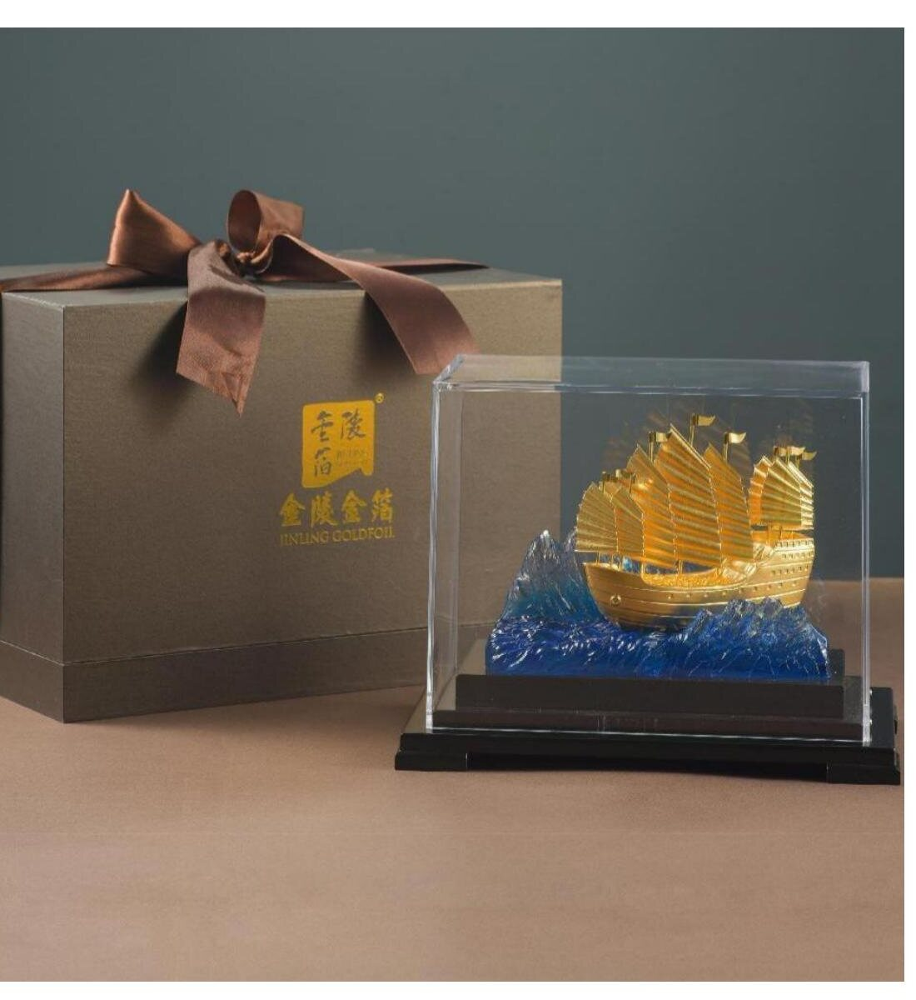
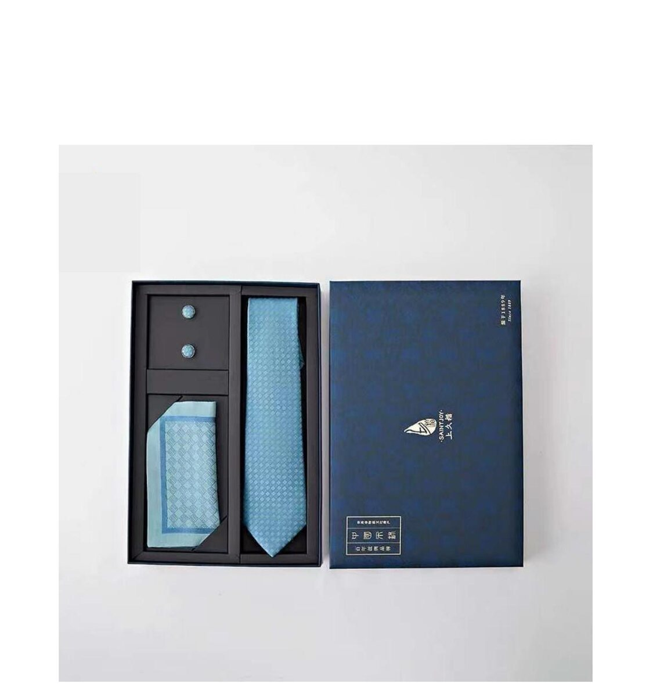
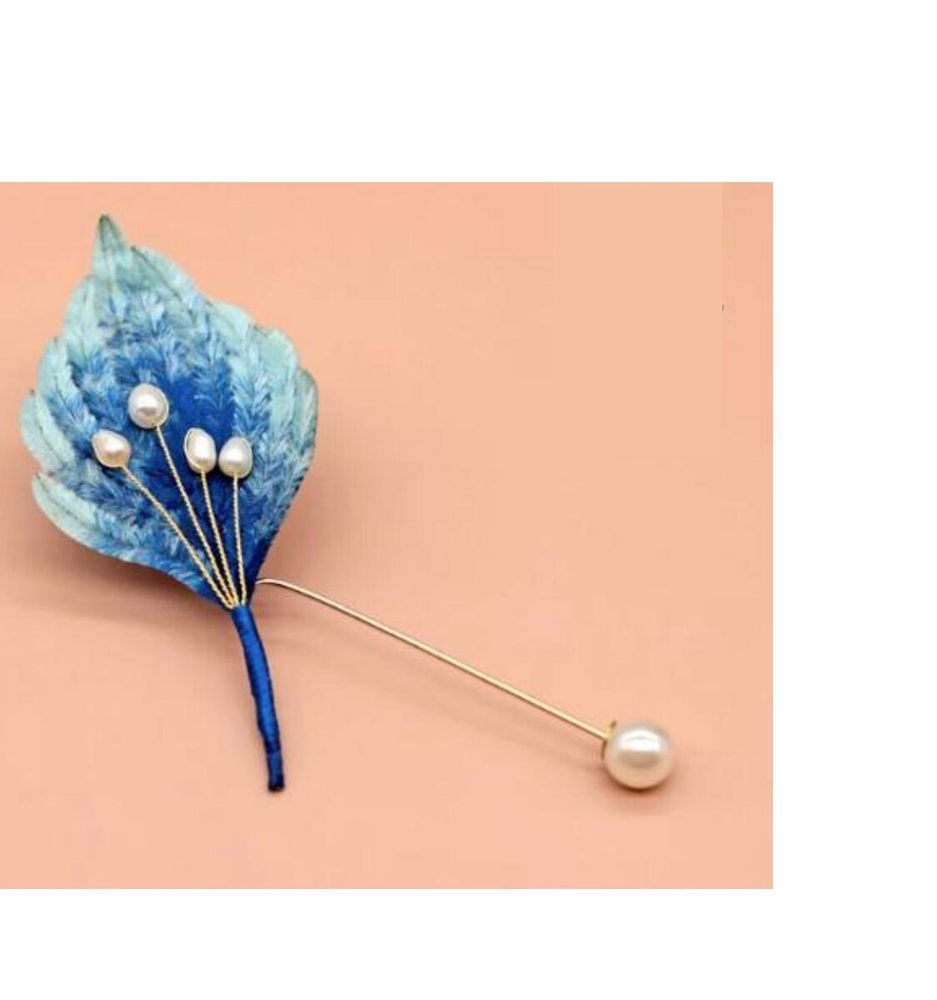
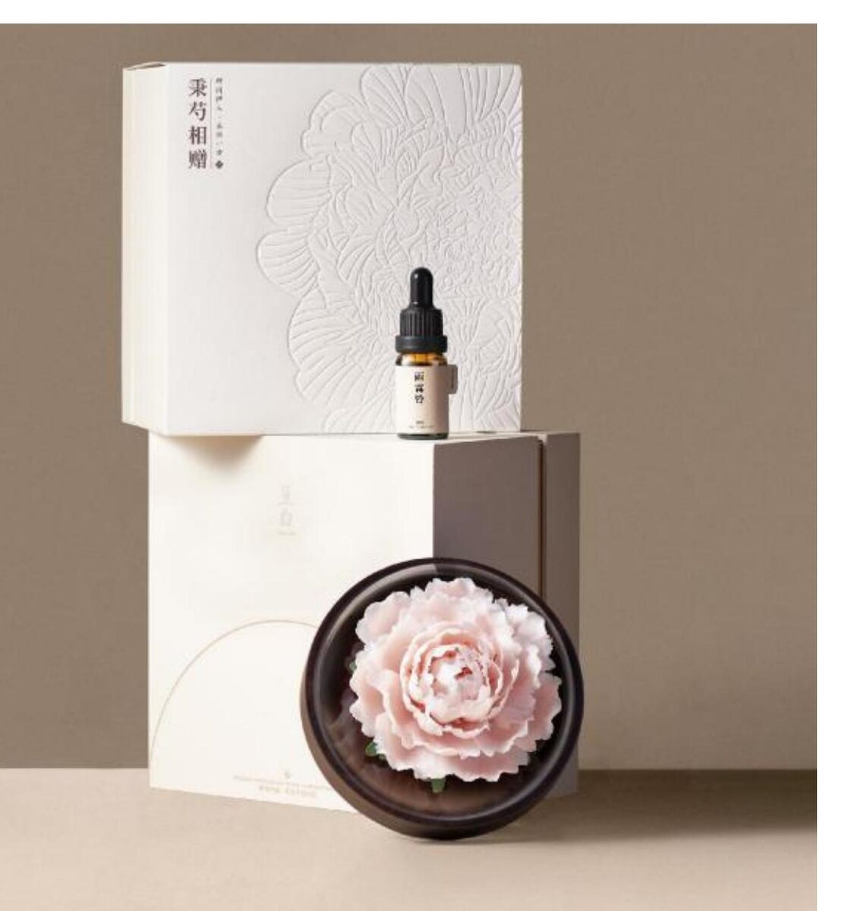

Yúnjǐn is the core of the house. But Nanjing's craft history is wider than a single textile, and a number of commissions — especially gift-suites for institutions and corporate clients — call for related crafts presented alongside the brocade. We work with three.

A 1,700-year tradition · capital-grade gilding craft
Nanjing has produced gold leaf since the Six Dynasties period. The leaf is beaten — by hand, between calf-skin sheets — to a thickness of approximately 0.12 microns. Used historically to gild palace beams, Buddhist statues, and imperial seals, Jinling gold leaf is today applied to sculptural objects, lacquered presentation pieces, and ceremonial gifts.
SEIDENHERKUNFT offers three principal forms: presentation sculptures (the Zheng He's Treasure Ship is a standing reference for diplomatic and corporate gifting); gilded brooches and pins (including the constellation-set unicorn brooch with marquise zirconia); and pure-gold-leaf framed panels for board-room display.
Bespoke gilding to client insignia available · MOQ from 1 piece (sculpture) or 25 pieces (jewellery).

From the Song-dynasty looms of Suzhou · scarves & sets
Sòng brocade is the second of China's three named brocades (alongside yúnjǐn and Sichuan's shǔjǐn). Where yúnjǐn was court textile, Sòng brocade was the scholar-officials' brocade — used for book bindings, mounted painting borders, and refined dress. The pattern repertoire is more restrained: small geometric units, jewel-like density, soft colour.
We commission Sòng brocade objects principally as a counterpoint to yúnjǐn in mixed-craft gift suites — typically silk scarves, neckties, and pocket squares in Sòng brocade paired with a yúnjǐn principal piece. Particularly well-received by male recipients in corporate and diplomatic settings.
Presentation sets with gift box · MOQ 20 sets · Lead time 8–10 weeks.

Nanjing silk-floss flowers · brooches, pins, headpieces
A 1,200-year-old Nanjing tradition: silk floss wrapped around a copper wire armature, then hand-trimmed into the shape of a single flower, a leaf, or an entire spray. Historically worn in the hair on ceremonial occasions; in the present collection, adapted to brooches and lapel pins for the European wardrobe.
The colour palette of róng huā extends well beyond what is feasible in yúnjǐn (it is dyed rather than woven), making this craft particularly suited to commissions requiring exact corporate palettes — Pantone-matched to a brand's house colour or to an event's design system.
Custom palette to Pantone reference · MOQ 30 pieces · Lead time 6–8 weeks.

Hand-shaped peonies in mutton-fat porcelain · paired with botanical oils
A contemporary collaboration between hand-shaping ceramicists and master perfumers of the Nanjing programme. The peony — the imperial flower of the Tang and Song — is hand-formed in a creamy, fat-toned white porcelain, then set in a dark hardwood diffuser dish, paired with a 10ml apothecary bottle of cold-pressed botanical essential oil.
The form is suited to corporate gifting where the recipient is unlikely to wear or display textile objects — particularly for executive desks, hotel suites, and welcome-amenity programmes. Presentation packaging is included; the gift box is itself debossed with the peony silhouette.
Custom oil pairing (rose / osmanthus / oolong / sandalwood and others) · MOQ 50 sets · Lead time 8–10 weeks.
For larger commissions, we design suites that combine yúnjǐn with one or more of the allied crafts above — a yúnjǐn scarf in a Sòng-brocade gift box; a gold-leaf medallion set into a yúnjǐn-lined presentation case; a róng huā brooch packaged alongside a yúnjǐn pouch.
Suites are typically commissioned for state visits, milestone anniversaries, founding-member awards, and museum-exhibition openings. The composition, packaging, and engraving are agreed at the brief stage. Reference proposals available on request.
Enquire about a Suite